Getting started
What do you need to make games using the FoE engine ?
You will need:
- Tiled (http://mapeditor.org), used to create the tilemaps for the game levels,
- Fallout Equestria Development Release, a build of the engine that includes a game editor,
- Knowledge of modular JavaScript.
1. Level design
Designing level starts with Tiled, building tilemaps, and ends in the Game editor, adding interactive objects and NPCs. In this chapter, we will go over how to build tilemaps suitable for our game engine.
Download and install Tiled, if you haven't already done so, and let's get started:
1.1 Creating a new tilemap
Go to File -> New -> New map to open the new tilemap dialog:
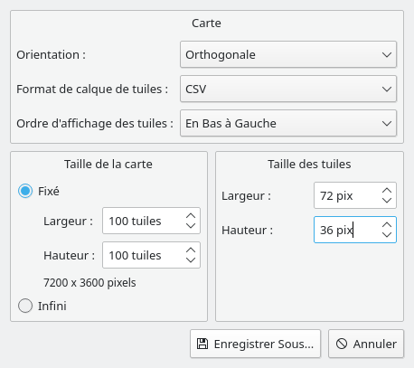
The tile size must be 72x36, orientation must be isometric, and tile order should be left-down.
Click the "Save as", and save your tilemap in assets/tilemaps as stable-cavern.json.
We will now import a tileset to paint our tilemap. Click the "Open" button:
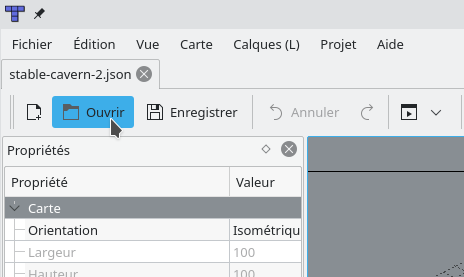
Go to the assets/tilesets folder and open the three following files:
- tileset-1.json, a tileset for ground and roof tiles.
- walls-1.json, a tileset for walls.
- zones.json, a tileset of semi-transparent tiles for tile zones.
One last thing before you can start painting your tilemap: rename the tile layer to ground.
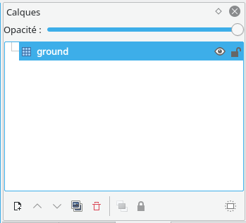
Everything's ready to go, you can start painting the ground layer of your tilemap. The result might end up a bit like this:
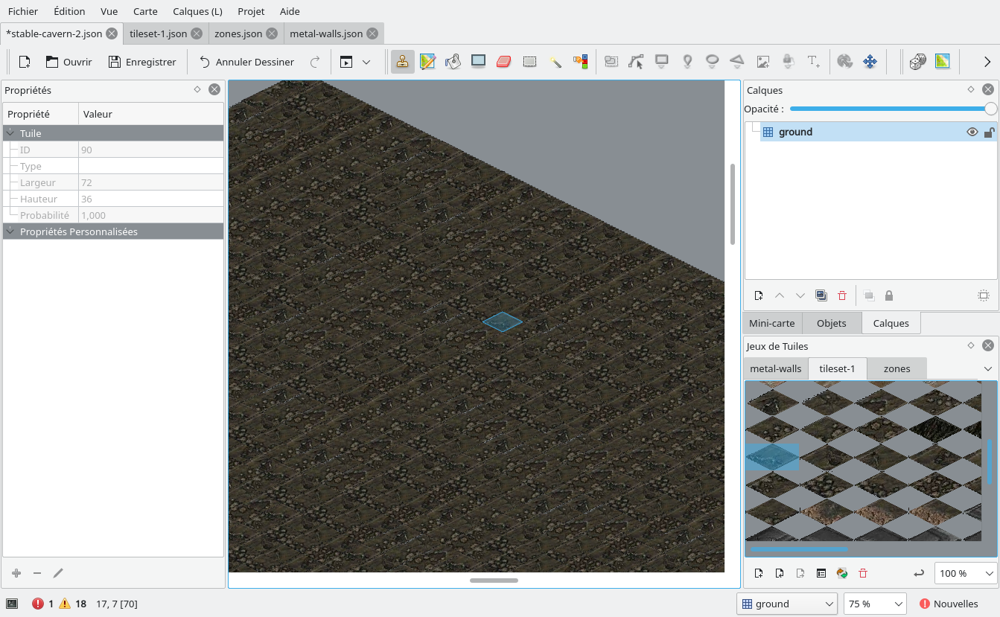
One important thing to know is that the ground and roof layers from your tilemaps get pre-rendered and cached in the .prerender folder. If you want to update those layers, don't forget to remove that folder, which will force the game engine to render your tilemap again, with your changes included.
1.2 Walls
Now that we know how to paint the ground, let's move on to the walls. We will need to create a new layer of tiles, called walls:
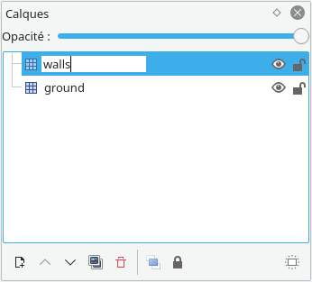
You can pick walls from the walls-1 tileset we opened earlier, and start painting your walls now.
It is important to note that walls will be used by the game engine to figure out which tiles the characters can move on, and which should be blocked.
If you wish to put on wall-like structures, but which do not block the path (doorways for instance), you may create another layer, called misc. Tiles in the misc layer are rendered in the same process as walls. The walls-1 tileset includes such doorways that should be inserted in the misc layer. Do not worry about the render order as it is shown by Tiled: for the game engine, tiles from the walls and misc layers act as if they were from the same layer.
1.3 Roofs
We'll now put roofs over those walls. Unlike the ground and the walls, roofs are stored in multiple layers: that is because when the player character is under a roof tile, the whole layer disappears, while the other roof layers remain visible.
The first step is to create a layer group named roofs. In this folder, you can then add any number of tile layer, named however you want:
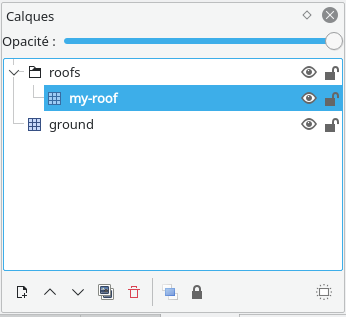
Roof layers also have another particularity: they are rendered at a diffrent offset than other layers. For each of your roof layer, you must set the property "Vertical offset" to -72:
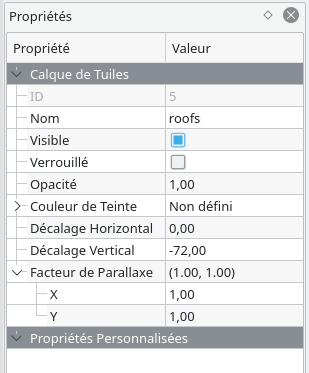
You may now start painting your roof layers. tileset-1 includes some roof tiles you can use at your leisure.
1.4 Zones
The last thing you will have to do in Tiled will be drawing tile zone. Tile zones can serve the following purposes:
- Entry zones can be used to insert a party of characters. It is mostly used when the map is entered by the player, to insert him along with his party.
- Exit zones can be used by the player character to exit a map. These zones can redirect either to another map or to the worldmap.
- Other zones can be used by scripts, to get a list of the objects in a zone (characters included), or to monitor what enters or exits the zone.
Note that exit zones are the only ones visible to the player. The tiles used when rendering the exit zones depend on whether the exit zone will send the player to another tilemap, or to the worldmap: it does not matter which kind of tile you use in Tiled to define your zone.
Let us create an exit and an entry zone for our tilemap. Like roofs, zones are grouped in a layer group: create the zones layer group, and add two new tile layers, called exit-zone and demo-begin:
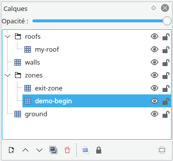
We will start by creating the entry zone. We will have to set some custom property on our zone's tile layer, before drawing the zone, as shown in the following video:
We first created the type property, which will indicate the game engine our zone type. Authorized values are entry, exit, or an empty string.
As we are creating an entry-zone, we can also set the default property: when no entry zone name is explicitely found, or none match the zone name provided, characters will be inserted in this zone instead. As such, it is also the zone in which the player arrives when coming from the worldmap.
Creating our exit zone is very similar, but we may provide other custom properties:
- target can be set to the name of the tilemap you wish to redirect to.
- toZone should be set to the name of the entry zone you wish the player to be redirected to.
If both target and toZone are left empty, the exit zone will send the player to the worldmap.
If only target is empty, the exit zone will look for an entry zone corresponding to toZone in the current tilemap.
1.5 Light zones
There is also one last special type of zone: light zones are used to draw light effects on the tilemap, while allowing bonuses for perception related tests on objects affected by a light zone. Light zones can also be turned on and off by scripts.
Light zones are located in the lights layer group. Create a new tile layer as such:
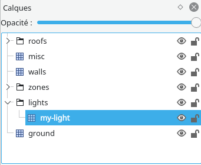
Open the tileset located at assets/tilesets/lights.json, and you can now start drawing light zones:
2. Scripting introduction
2.1 Folder structure
Before writing any scripts, let's have a look at the folder structure you'll be working with. There are quite a lot of places for various types of files, so just remember this is here and use it as a reference.
| Path | Role |
|---|---|
| assets/tilemaps | the target folder for your Tiled tilemaps |
| assets/tilesets | the target folder for your Tiled tilesets |
| assets/locales | translations files are located there |
| assets/videos | root folder for video files |
| assets/audio | root folder for audio files |
| assets/sprites | root folder for spritesheets |
| scripts/cmap/traits | CMAP traits plugins folder |
| scripts/cmap/races | CMAP races plugins folder |
| scripts/cmap/perks | CMAP perks plugins folder |
| scripts/quests | Quest folder |
| scripts/dialogs | Dialog folder |
| scripts/levels | Level-context scripts (each level can implement one) |
| scripts/pnjs | Characters scripts |
| scripts/items | InventoryItems scripts |
| scripts/behaviour | All other DynamicObjects scripts |
Let's also have a look at a series of useful files:
| Path | Role |
|---|---|
| assets/audio.json | maps audio files to nicknames |
| assets/musics.json | set of playlists prepared for certain contexts (specific level, worldmap, main menu) |
| assets/sprites.json | library of animation and animations groups (should be edited using the Game Editor) |
| assets/objects.json | library of available InventoryItems' item types. |
| assets/worldmap.png | Worldmap source |
| scripts/main.mjs | Game-context script |
| scripts/initialize.mjs | A simple script that initializes the Game context once a new game starts. |
2.2 Initializing a new game
The first thing you want to do is to take control of the entry point of the game. You want the player to start at a specific place in the WorldMap, and possibly to start directly inside a Level.
To achieve such results, we will use the scripts/initialize.mjs file. It gets triggered once the players finishes character creation, allowing you to insert any sort of transition and set up the beginning of the game.
The initialize.mjs is a very simple script, and must only export a single initialize function, as such:
export function initialize() {
game.onCityEntered("stable-cavern", "demo-begin");
game.worldmap.setPosition(150, 250);
game.transitionRequired("intro.mp4", 1);
}This scripts does three things:
- The first line uses game.onCityEntered to load the stable-cavern level (corresponding to the tilemap stored in assets/tilemaps/stable-cavern.json). The second parameter demo-begin defines the zone in which to insert the player.
- The second lines instantly move the character to a specific position on the worldmap.
- The third lines starts a transition using game.transitionRequired. Transitions can be started at anytime during the game: the first paremeter specifies which video file to play (the path is relative to the assets/videos folder), and the second parameter defines how much game-world seconds should pass during the transition (in this case, only one second will pass in the game world while the player watches the video).
game is a global variable pointing to the main game object. It is available everywhere, and can be used at any time by scripts to move the player to another area, move ahead in time, or start playing a video.
2.3 Customizing the Game script
The Game script is located at scripts/main.mjs. It is bounded to the Game context, and as such, gets loaded whenever a game starts, and keeps running until the game is exited or over.
The following is the basic structure for all the Game, Level and DynamicObject scripts:
class Game {
constructor(model) {
}
initialize() {
}
}
export function create(model) {
return Game(model);
}All game-related scripts must export a create function. The create function takes a model parameter, representing the instance of the managed object. The function must return an instance to a JavaScript object.
All game-related scripts may implement an initialize method. While the constructor will be called everytime an object is instantiated, the initialize method will only be called once, after the first instantiation. Since game objects properties are automatically saved by the game engine, it is best to set their initial value here, if needed.
Note that the managed object (model) for the Game script is the main game object itself, meaning that in this context, model is equal to the game global variable.
2.4 Scheduling a task
Let us add some action in that Game script: we will use the TaskManager to create a task that gets called every 5 seconds, and have the light zone we created earlier switch on and off:
export class Game {
initialize() {
game.tasks.addTask("myTask", 5000, 0);
}
myTask() {
if (game.level) {
const myLight = level.tilemap.getLightLayer("my-light");
if (myLight) {
myLight.visible = !myLight.visible;
game.appendToConsole(myLight.visible ? "Lights on !" : "Lights off");
}
}
}
}
export function create(model) {
return new Game(model);
}In this snippet, we use the game global object tasks property to access the object's TaskManager, and call addTask to schedule a new task.
- The first parameter is the name of the game object script method I want to call in 5 seconds.
- The second parameter is the time delay between each calls: it is in milliseconds, which means that for a 5 seconds delay, I need to pass a value of 5000
- Finally, the third parameter is the amount of times the task should be triggered. A value of zero means the task will run indefinitely, or until it gets exlicitely removed.
Keep in mind that the TaskManager does not necessarily call a method from the script that calls addTask: it will try to call that method on the script of the object that owns the TaskManager.
Lastly, we call game.appendToConsole to display a message on the player's HUD console.
Now, here's the result of our new initialize.mjs and main.mjs scripts:
3. Creating an NPC
We will now live a wonderful adventure through NPC creation. After going through the steps of this chapter, you will know how to customize interactions, skill usages, combat behaviour, and how to implement your own custom behaviours.
3.1 Creating a new Character script
Before doing anything else, let's first scaffold our first character script:
import {CharacterBehaviour} from "./character.mjs";
class Npc extends CharacterBehaviour {
constructor(model) {
super(model);
}
}
export function create(model) {
return new Npc(model);
}CharacterBehaviour is a script helper that implements default behaviour for various interactions, as well as default combat behaviour. We'll mostly be overriding those behaviours to implement our own.
3.2 Creating a character sheet
As in any RPG, making up character starts with a character sheet. That part of the magic happens in the Game Editor. Start the game editor, go to the NPC tab, and create a new character sheet as such:
Before saving the character sheet, it needs to be completed. To complete the statistic sheet, you must:
- You need to set a name, age, gender, race.
- Spend all your SPECIAL points
- Pick two traits
You can also further customize your NPC's statistics by granting it experience and leveling it up, as following:
Don't forget to click the Confirm button once you're done with your character sheet, otherwise none of your changes will be saved. Your changes will be lost if you swap levels or go back to the main menu without saving.
3.3 Adding an NPC in a level
Now that we have a script and a character sheet, we can finally instantiate an NPC in a Level. In the Game Editor, move to the Level tab, and add a character:
The Level editor uses similar interaction principles as the game itself: you have two mouse cursor mode. The first one picks tiles, the second one picks objects. Right click on the tilemap to swap between modes.
Picking an object will select it and display in the right-handed sidebar.
Picking a tile while an object is already selected will move the object to the selected tile.
Now that you've added a new NPC to the level, let's configure it to use the script we created earlier:
Don't forget to click the Save button on the bottom-right side of the screen in order to save your changes.
Once your changes have been saved, if you launch a new game, your NPC will be there waiting for you. It's not doing much yet though: let's fix that !
3.4 Interactions and Text bubbles
Your NPCs can talk directly to the player, using the dialog system, but they can also speak outside of the dialog interface, using text bubbles. Text bubbles are displayed on top of a character's sprite for a given amount of time. Text color is used to express the emotion of the character.
We want our NPC to say something specific when the player tries to talk with it. First, we need to setup the script to let the game engine know that our NPC can talk, by overloading the getAvailableInteractions method as following:
class Npc extends CharacterBehaviour {
constructor(model) {
super(model);
}
getAvailableInteractions() {
const interactions = super.getAvailableInteractions();
if (!level.combat)
interactions.unshift("talk-to");
return interactions;
}
}Now, when the player opens the interaction menu, the first interaction in the list will be the talk-to interactions.
Available interactions are:
talk-to
push
look
use
use-object
use-spell
use-skill
Note that use-object, use-spell and use-skill are slightly different from other interactions, and will be covered in another chapter.
Now that our script makes the talk-to interaction available to the player, we need to implement a behaviour for that interaction.
This is done by adding a method to your script, which name is relative to the interaction you want to react to. For the talk-to interaction, the method shall be named onTalkTo. Here's how we'll use it:
class Npc extends CharacterBehaviour {
constructor(model) {
super(model);
}
getAvailableInteractions() {
const interactions = super.getAvailableInteractions();
if (!level.combat)
interactions.unshift("talk-to");
return interactions;
}
onTalkTo() {
level.addTextBubble(this.model, "Hello world !", 3000, "lightgreen");
return true;
}
}
To display our text bubble, we called the level.addTextBubble function.
- The first parameter is the object managed by your script. It is available within your script as this.model.
- The second parameter is the text you want to be displayed.
- The third parameter is the duration the bubble will remain visible, expressed in milliseconds
- The last parameter is optional, and defines the text color. If none is provided, the text color will be white.
Our method also returns true: this is optional, but ensures that the game engine's default behaviour for the targeted interaction won't run.
3.5 Statistics checks and Inspection
Sometimes, you will want the outcome of a given action to be determined by the player's character statistics. We'll showcase how to access a character statistics by implementing a custom behaviour for the look interaction, that will show additional details to the player if his character has enough perception:
class Npc extends CharacterBehaviour {
constructor(model) {
super(model);
}
getAvailableInteractions() {
const interactions = super.getAvailableInteractions();
if (!level.combat)
interactions.unshift("talk-to");
return interactions;
}
onTalkTo() {
level.addTextBubble(this.model, "Hello world !", 3000, "lightgreen");
}
onLook() {
const isPerceptiveEnough = game.player.statistics.perception > 5;
if (isPerceptiveEnough)
game.appendToConsole("You see " + this.model.statistics.name + ". He looks positively dazzling today.");
else
super.onLook();
}
}In this snippet, we added a onLook method to implement a custom behaviour for inspection.
It starts by accessing the player's statistic sheet using game.player.statistics. Note that the player object is always available through the game global object.
We then check if the character perception is above 5: if it is, we display our own custom message on the game console using game.appendToConsole. Otherwise, we fallback to the default behaviour by calling super.onLook().
3.6 Movement and actions
To move a character or perform action, you need to use the character's action queue. The action queue allows you to define series of actions to perform. It supports the following actions: Movement, Reach, ItemUse, SpellUse, SkillUse.
In the following code, we will set up our NPC to follow the player, using the Reach action.
class Npc extends CharacterBehaviour {
initialize() {
this.model.tasks.addTask("followPlayer", 5000, 0);
}
followPlayer() {
const requiredDistance = 3;
const distance = this.model.getDistance(game.player);
if (distance > requiredDistance) {
const actions = this.model.getActions();
actions.reset();
actions.pushReach(game.player, requiredDistance);
actions.start();
}
}
}We first schedule a task that will get called every five seconds.
Don't forget to schedule such recurrent tasks in the initialize method, rather than in the constructor. Otherwise, the task would be scheduled each time the character gets instantiated, resulting in a lot more calls to your target method than you probably hoped for.
In the followPlayer method, we order our NPC to ensure that the distance between him and the player is less than 3. When the distance goes over the limit, we fetch the action queue using this.model.getActions(), and set up a Reach action.
When using the action queue, you probably will want to interrupt any action that might already be running. To do so, we call actions.reset() before scheduling any new actions.
The Reach action is scheduled using pushReach. The first parameter is the object you want your character to move towards. The second parameter is the maximum distance you wish to keep with the object.
The Reach action ensures that your character will have a line of sight with the targeted object, meaning it's useful for following, interacting with objects, or finding the proper position to shoot ranged weapons.
Finally, we call actions.start() to trigger the action queue: it will then execute each actions consecutively, until one of them fails, or until the queue is empty. In both cases, your ma implement a onActionQueueCompleted method, and it will get called whenever the action queue is interruped or completed.
3.7 Combat and Diplomacy
3.7.1 Combat basics
We will now start our first combat, and write a simple strategy for our NPC that will consist in running for dear life, away from the player. Then, we will see how to make our own NPC start the combat, by using the Diplomacy features.
There are three methods you script need to implement to properly react during combat:
- onTurnStart gets called when your NPC's turn start
- onActionQueueCompleted which we talked about in chapter 2.6, will get triggered once your actions have been executed. In combat, you should use this callback to schedule new actions, or pass your turn.
- onDamageTaken is called when your NPC takes damage. You may use it to pick the most dangerous target for your NPC
Let's see those methods in action:
class Npc extends CharacterBehaviour {
onDamageTaken(damage, attacker) {
this.fleeingCharacer = attacker;
}
onTurnStart() {
const isThreatened = this.fleeingCharacter && this.model.hasLineOfSight(this.fleeingCharacter);
if (isThreatened) {
this.model.movementMode = "running";
this.model.moveAway(this.fleeingCharacter);
}
else
level.passTurn(this.model);
}
}
As you can see, we used onDamageTaken to set a character our NPC will flee from.
Then, in onTurnStart, we check if our NPC has a character to flee from. If it doesn't, we immedately call level.passTurn(this.model) to skip our NPC's turn.
When our isThreatened evaluates to true, we set movementMode on our model to trigger the running mode. Characters are walking by default, and you can switch between these two modes whenever you want.
After setting the movement mode, we call this.model.moveAway: that method is a helper to move one case away from a given character. Under the hood, it also uses the action queue, which means that onActionQueueCompleted will also get called once the NPC has moved.
In the current state of affairs, if you were to launch a game and start a fight with that NPC, the game would get blocked, because your NPC doesn't ever finish his turn.
There are two ways to finish a turn: spending all your action points, or calling level.passTurn. In the following code, we'll add a onActionQueueCompleted method to order our NPC to keep running away, or pass its turn:
class Npc extends CharacterBehaviour {
onDamageTaken(damage, attacker) {
this.fleeingCharacer = attacker;
}
onTurnStart() {
this.tryToRunAway();
}
onActionQueueCompleted() {
if (level.combat)
this.tryToRunAway();
}
tryToRunAway() {
const isThreatened = this.fleeingCharacter && this.model.hasLineOfSight(this.fleeingCharacter);
if (isThreatened) {
this.model.movementMode = "running";
this.model.moveAway(this.fleeingCharacter);
if (this.model.getActions().isEmpty())
level.passTurn(this.model);
}
else
level.passTurn(this.model);
}
}
We moved the code previously in onTurnStart to a new custom method, tryToRunAway.
We then call this method both on turn start or when the action queue is completed. Note that, when the action queue is completed, we also check if a combat is currently happening by checking the level.combat variable. That is because the action queue callback get called both in and outside combat, whenver the action queue is depleted.
This new code also handles another scenario: what if our NPC is stuck and cannot move away ? Then, the action queue won't be able to start, it will be empty, even after calling moveAway... and our NPC won't ever pass his turn.
To prevent that from happening, we check that the action queue is active by calling this.model.getActions().isEmpty(). If the action queue is empty, we pass our NPC turn by calling level.passTurn(this.model).
3.7.2 Diplomacy
Now that we know how to make our NPC behave in combat, let's have a little talk about how NPCs detect friendly or unfriendly characters, and start fights on their own.
The character sheet defines a faction for each characters. A faction is optional, but most NPC should have one: an NPC without a faction can recognize his own enemies, but he cannot be recognized as an enemy by other NPCs, as only Factions can be defined as enemies (individual characters cannot).
Each character has its own list of enemies. Each faction has its own list of enemies. And each character may be part of one faction.
This behaviour has been implemented to allow infiltration scenarios, in which some characters might fight against the player, but the faction may not be warned about the change in relationship unless the player doesn't manage to get rid of all the witnesses.
Now that we've covered the basics principles of diplomacy, let's edit our NPC code and see how to leverage it to have our NPC trigger a combat:
class Npc extends CharacterBehaviour {
get fleeingCharacter() {
return game.player;
}
getAvailableInteractions() {
const interactions = super.getAvailableInteractions();
if (!level.combat)
interactions.unshift("talk-to");
return interactions;
}
onTalkTo() {
level.addTextBubble(this.model, "Catch me if you can !", 3000, "yellow");
this.model.setAsEnemy(game.player);
}
onTurnStart() {
this.tryToRunAway();
}
onActionQueueCompleted() {
if (level.combat)
this.tryToRunAway();
}
tryToRunAway() {
const isThreatened = this.fleeingCharacter && this.model.hasLineOfSight(this.fleeingCharacter);
if (isThreatened) {
this.model.movementMode = "running";
this.model.moveAway(this.fleeingCharacter);
if (this.model.getActions().isEmpty())
level.passTurn(this.model);
}
else
level.passTurn(this.model);
}
}There are two new things to notice here:
First, as our NPC's threat is no longer defined by who previously attacked him, the fleeingCharacter variable is no longer defined in onDamageTaken, but in a getter that always returns the player character.
Then, we added a custom handler for the onTalkTo interaction, as we had done in chapter 2.4. In this custom handler, we called this.model.setAsEnemy(game.player). After that method is called, your NPC and player will detect each other as enemies. NPCs start a fight whenever an enemy enters their field of view.
You may have noticed that you can also set several NPCs as enemies. Be careful though: it will only work if at least one of the NPC is part of a faction.
If all went well, this is what interactions between our player and NPC should now look like:
3.8 Data storage
Often, you will need to save data that will remain accessible as the player exits a level, save and load a game, and so on...
And the thing is, while properties on game objects* are always saved by the game engine, the properties that you set on your scripts aren't saved between multiple loads of your script.
Game objects are the native objects provided by the game engine itself. The parameter received by in the export function create(model) function is an example of game object.
To answer all your data saving needs, all game objects come with a data store, meaning that you can save data globally, using the game global property. You can also save data on a specific level, using the level global property. And you can also save data on specific characters, items, objects of all kinds.
Using the data storage features is pretty easy: there are only three method names you need to memorize. We will present the three of those in the following snippet:
import {CharacterBehaviour} from "./character.mjs";
const textBubbles = [
"first message",
"second message",
"third message"
];
class Npc extends CharacterBehaviour {
onTalkTo() {
var value = 0;
if (this.model.hasVariable("myVariable"))
value = this.model.getVariable("myVariable");
if (value < textBubbles.length) {
level.addTextBubble(this.model, textBubbles[value], 5000);
return true;
}
return false;
}
}
export function create(model) {
return new Npc(model);
}With that new onTalkTo method, we ensure that our character will consistantly react to talk-to interactions by successively speaking each line in the textBubbles array.
You could achieve the same behaviour with JavaScript properties... but it wouldn't work anymore as a player leaves and rejoin the level your NPC is in, or if the player saves and loads the game. Thanks to the hasVariable, getVariable and setVariable methods, the state of our NPC will be preserved.
4. Dialogs
4.1 Creating a new dialog
We will now create a minimalist dialog, teaching you the basics of dialogs. Start by opening the dialog editor in the game editor, and create a new dialog, as following:
4.2 Lines and answers
A dialog is basically a set of states and answers. The dialog starts in a given state, and the player then move through states by selecting answers.
4.2.1 States
We must then create a first state, which will serve as the entry point for our dialog, and will be the first state to load when the player initiates a dialog:
A new interface popped up, allowing you to preview the current state and its answers. Dialogs work with a translation system, which implies that we will first define a translation key, before providing a translation for it. The following video shows you how to set the translation key for the current state:
And now, we add the corresponding translation using the translate button:
The translate button will create a translation for the language currently configured in the game. Use the options menu entry on the main menu to configure the current language.
Translations are stored in the assets/locales folder, using JSON format. You can also edit these files manually.
Before moving on to the next step, please create a second state for your dialog: we will see in the next sub-section how to move from one state to the other.
4.2.2 Answers
We will now see how to create and configure answers. There are several important facts about answers you need to know:
- Answers are optional. If no answer is defined for a given state, the dialog will generate a single answer that the player may use to leave the dialog.
- Answers are shared between states. If you use the same name for two answers in two different states, changes to one of the answer will also affect the other one.
- Default behaviour for an answer is to redirect to another state. If no state is set, the dialog will close when the player picks that answer.
Now that we've cleared that up, let's add our first answer. Click the Add answer button on the bottom part of the screen, and create a new answer.
The new interface that popped up can be used to customize our answer. Start by setting a translation key and providing a translation, just as we did for the current state text.
By default, the answer does not have any target state, meaning that it's only effect is to end the dialog. Let's configure that answer so that it redirects the dialog to the second state we created earlier:
4.3 Binding a dialog on a NPC
Our minimalist dialog is ready to be used in game. We first need to bind it to a NPC: let's use the NPC we created in Chapter 2. Update the code as following:
import {CharacterBehaviour} from "./character.mjs";
class Npc extends CharacterBehaviour {
constructor(model) {
super(model);
this.dialog = "myDialog";
}
}
export function create(model) {
return new Npc(model);
}
It's as simple as that: just set the dialog property on your script in the constructor. Note that we don't need to overload getAvailableInteractions anymore, as the default behaviour for that method is to include the talk-to interaction when a dialog is set.
Properties such as dialog should not be set in your script initialize method, or else your dialog would only be available the first time the character load.
Everything is ready for a test run. This is the result of what we've done so far:
4.4 Scripting dialogs
This is all well and fine, but un-scripted dialogs can only lead us so far. We will now learn how to implement more complex behaviour using the dialog's script.
The dialog script file has been created back when we created the dialog in section 3.1. Open the file at scripts/dialogs/myDialog.mjs:
class Dialog {
constructor(dialog) {
this.dialog = dialog;
}
}
export function create(dialog) {
return new Dialog(dialog);
}The first thing to know is that you have access to the NPC character object through this.dialog.npc. Dialogs are not persistent, so any information you wish to store about a dialog should be stored within the NPC character object.
Scripting dialogs mostly amounts to creating callbacks that you then configure for each state and answers in the Dialog Editor. Here's a list of callbacks and what you can do with those:
| Callback | Return value | Description |
|---|---|---|
| getEntryPoint | state name | Implement this method to programmaticaly define the first state of a dialog. If the method isn't implemented, or doesn't return a state name, the initial state set in the dialog editor will be used instead. |
| Available callbacks | boolean | Available callbacks are methods you may define on answers, allowing you to programmaticaly define whether the answer will be visible to the player or not. Available hooks are called when a state loads. |
| State trigger callbacks | text or object | Use these callbacks if you want to programmatically define the text for a state. Optionally, you may also return a JavaScript object, allowing you to set both the text and the answers for the state. |
| Answer trigger callbacks | state name | These callbacks are called when a player picks an answer. They allow you to programmatically override the default target state for the answer. |
| Answer text callback | text | Use these callbacks to programmatically define the text for an answer |
4.5 Setting the mood
Dialogs can also have an ambiance and a specific mood. The ambiance is the background displayed behind the character's face, while the mood determines how the face is rendered.
Available ambiances are stored in assets/faces/backgrounds, and you may also add your own, using the PNG format.
The following snippet customizes our dialog to use the wasteland ambiance:
class Dialog {
constructor(dialog) {
this.dialog = dialog;
this.dialog.ambiance = "wasteland";
}
}
export function create(dialog) {
return new Dialog(dialog);
}Moods will typically change in your state trigger callbacks, but for the purpose of the exemple, we'll also set a mood for our NPC on dialog creation in the following code:
class Dialog {
constructor(dialog) {
this.dialog = dialog;
this.dialog.ambiance = "wasteland";
this.dialog.mood = "smile";
}
}
export function create(dialog) {
return new Dialog(dialog);
}Available moods are: angry, cocky, neutral, sad, smile.
5. Game Objects
5.1 Introduction
Game Objects are the objects populating the world: characters, doors, items, and anything that the player can interact with. All of them can be controlled by a script, and they all share a set of tools to help you program their behaviour:
| Sprite | The visual representation of a game object on the tilemap. |
| Script | Scripts are attached to their game objects, and can be interacted with by other scripts. |
| Detectability | By default, objects are visible. But they can be hidden, and revealed through script or detection. |
| DataStore | Persistent data are written in DataStore, as seen in section 2.8. |
| ControlZone | Objects can optionally feature a control zone, defined in the Game Editor. Control zones can signal the script when characters enter the zone. They can also block or release access to the zone. |
| TaskManager | Allows you to schedule calls to your scripts. It is based on game-time, rather than real-time. The game and level global objects also feature a TaskManager, and we've experimented with it in section 1.4 and 2.6. |
In our journey to discover game objects, we will start with the simplest of them all: we call it the DynamicObject, and it serves as a basis for all interactive objects.
5.2 Sprite and positionning
Our first DynamicObject will be a puddle of acid. We will use this example to learn how control zones work. Our first step will be to create a Sprite for our object. We will use the following picture to represent our puddle:
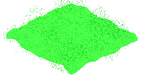Download this file to your assets/sprites folder. Then, open up the Game Editor, go to the Sprite tab, and create our new sprite as following:
Sprites are organized in groups. Objects usually use sprites from a single group. Here, we created a sprite group named acid-puddle, and added the normal animation to it.
Now that our sprite has been created, let's create a generic object in the level editor. When creating an object, we will select the "Other" category, to tell the level editor we're creating a custom DynamicObject.
Then, we will set a position on the map, and select the sprite we created. See the following video for reference:
Our acid puddle is now rendered in the level. But it's not exactly properly positionned. Characters are going to walk on that puddle, and we want it to be properly rendered below the characters, and not above.
For these kind of situations, we will use the Floating positionning mode, as opposed to the Tile-based one. A tile position will still be required, as it is necessary to determine render order. But we will set the position manually, as following:
Since the rendering order starts with objects from the top and right positions, you should ensure the tile position of your floating objects is set to the upper right tile overlapped by your object.
5.3 Control zones
Now that our puddle is rendered on screen, we will need a way for it to know when characters are moving around in it. Luckily, that is one of the feature of the control zones. We will now set our sights on creating a control zone, and interacting with it using a script.
Let's configure our control zone first. Create a control zone for the puddle, like this:
The first thing we did here was unchecking the Blocks path checkbox: by default, control zones block access to the zone cases. But we want characters to walk on our puddle, so our zone must be accessible.
Then, we toggled the zone edit mode: when the zone edit mode is enabled, clicking on tiles will add them to the control zone.
The next step is to create script that will put this control zone to use. Create the following script:
class AcidPuddle {
constructor(model) {
this.model = model;
}
initialize() {
this.model.blocksPath = false;
}
}
export function create(model) {
return new AcidPuddle(model);
}In the initialize method, we set this.model.blocksPath to false: by default, objects block access to the tile they are occupying. You can toggle that behaviour by setting this property.
Now, let's say we want our acid puddle to inflict damage on characters as they enter or exit the zone: to achieve that, we can overload the methods onZoneEntered and onZoneExited:
class AcidPuddle {
constructor(model) {
this.model = model;
}
initialize() {
this.model.blocksPath = false;
}
onZoneEntered(character) {
this.inflictBurn(character);
}
onZoneExited(character) {
this.inflictBurn(character);
}
inflictBurn(character) {
if (character == game.player)
game.appendToConsole("The acid is slowly disolving you !");
character.takeDamage(10);
}
}
export function create(model) {
return new AcidPuddle(model);
}With that example, we know how to make our object react to characters entering or leaving its control zone. But what if we want to inflict damage over time to the characters that are already within the zone ?
We will update our acid puddle script to inflict damage to the residents of its control zone over time. For that, we will use the getControlZoneOccupants method from our game object, conjointly with its Task Manager:
class AcidPuddle {
constructor(model) {
this.model = model;
}
initialize() {
this.model.blocksPath = false;
this.model.tasks.addTask("inflictBurn", 3500, 0);
}
inflictBurn() {
const occupants = this.model.getControlZoneOccupants();
const characters = occupants.filter(object => object.getObjectType() == "Character");
characters.forEach(character => character.takeDamage(10, null));
}
}
export function create(model) {
return new AcidPuddle(model);
}
The getControlZoneOccupants method returns a list of all the objects in a zone: but we only care about characters, which is why we filtered out the non-character objects using getObjectType.
Then, we iterate over each character and inflict damage to them by calling takeDamage.
takeDamage takes two parameters: the first one for the amount of damage inflicted, while the second one is meant to indicate which other character inflicted the damage. When damage hasn't been inflicted by any character in particular, you can just pass null instead.
Set the script for our object, as we previously did in section 2.3: if you start a new game and walk on our puddle, you should take 10 points of damage every 3.5 seconds.
5.4 Detectability
Sometimes, objects should be concealed to the player. Concealed objects can be revealed through script, or through detection by the player. Detection is based on the player's Perception and the distance between the player and the object.
If we edit the initialize method of our script as below, we will make our object invisible to the player until we manually reveal it later. We do this by setting the this.model.hidden property:
initialize() {
this.model.hidden = true;
this.model.blocksPath = false;
this.model.tasks.addTask("inflictBurn", 3500, 0);
}
What if we want to enable detectability for the player ? To do that, we'll use sneaking, as following:
initialize() {
this.model.toggleSneaking(true);
this.model.interruptOnDetection = true;
this.model.blocksPath = false;
this.model.tasks.addTask("inflictBurn", 3500, 0);
}
onDetected() {
game.appendToConsole("You detected a puddle of acid");
}
Note that we also set interruptOnDetection to true: this will cause the detection to interrupt whatever the player is currently doing. It is useful to prevent the player from trigerring a trap that he just detected.
We also added the onDetected method, which is called whenever concealed objects are detected.
Well then ! We've worked hard on that puddle of acid. Let's see it in action:
6. Inventory, items and equipment
6.1 Introduction
We will now direct our attention towards the item management system. Items are game objects as well, but unlike other game objects, they can be extracted from the tilemap and stored in an inventory. Moreover, they can be equiped in inventory slots (armor, primary item, secondary item).
An item's behaviour is determined by his itemType property. Item types can be defined in the Game Editor, in the Items tab. Let's have a look at the interface:

| Type | A property meant as a way to filter items by category in inventories. |
| Weight | The item weight, used for carry weight checks. |
| Value | A value of reference to use for barter. The actual barter value will be calculated using this value and the barter skill value of the player's character and the NPC. |
| Groupable | Groupable items can merge together, and have an amount property. It is useful anytime the item's behaviour doesn't require the game object to have a persistent state, as a mean of avoiding cluttered inventories. Note that the groupable property can be overriden by the item's script, and relative to each instance of a given item type. |
| Sprite | The sprite is used to represent the object when it is on a tilemap. Item sprites are defined in the Sprite Editor, using the items sprite group. The sprite's size should be 72x36. |
| Icon | The icon is used to represent the object when it is in an inventory. Item icons should be stored in assets/icons. |
| Script | The scripts for items are located at scripts/items. They're game object scripts, as we've already seen many times so far, but can implement a few more properties and methods related to inventory, equipment and targeting. |
6.2 Storage Objects
Storage objects are game objects featuring an Inventory. Characters, for instance, are a sub-class of Storage objects. In this section, we will create a Storage object to demonstrate how inventories are managed in the game editor.
Open the LevelEditor and create a Storage object, using the locker sprite:
As you can see, and just like for character objects, storage objects have an Inventory button. It's pretty straightforward to use:
Plain storage objects don't need a script: our locker is ready to use with just these few steps.
But what if we want to implement more complex behaviours ? For instance, let's say our NPC owns the locker, and doesn't want us to touch his precious wares ?
Let us write a script that will allow us to do that. We will use onTakeItem and onPutItem to prevent the user to take or put items in our locker, if our NPC sees him do it:
class MyLocker {
constructor(model) {
this.model = model;
}
onTakeItem(character, item, quantity) {
return this.preventStealing(character);
}
onPutItem(character, item, quantity) {
return this.preventStealing(character);
}
preventStealing(character) {
const npc = level.getObjectByName("MyNPC");
if (npc && npc.isAlive() && npc.hasLineOfSight(character)) {
level.addTextBubble(npc, "Hey ! Don't touch that !", 4000, "red");
return false;
}
return true;
}
}
export function create(model) {
return new MyLocker(model);
}
In this code, we overladed both methods and implemented our own method to interrupt the player's attempt to loot on certain condition.
If the NPC exists and can see the player looting, then we return false, which will prevent the player from taking/putting an item in the inventory, and close the looting interface.
As characters extend on storage objects, they also feature a onTakeItem and onPutItem methods, which you can use to implement stealing behaviours.
In the Game Editor, configure our storage object to use the myLocker.mjs script we just created. Here's what the result should look like:
6.3 Creating usable items
We will now deep further in the item and inventory scripting tools by creating a consommable item that will temporarily increase a character's Agility.
First, we will prepare our item in the item editor, as shown in the video below:
Now, we will write the script for our item:
import {ItemBehaviour} from "./item.mjs";
class AgilityPotion extends ItemBehaviour {
constructor(model) {
super(model);
this.requiresTarget = false;
this.triggersCombat = false;
this.useModes = ["use"];
}
isValidTarget(object) {
return object.getObjectType() == "Character";
}
getActionPointCost() {
return 2;
}
}
export function create(model) {
return new AgilityPotion(model);
}ItemBehaviour, similarly to CharacterBehaviour, implements default behaviours for all the methods that the game engine might call on Item objects.
Let's have a look at the properties and methods we've set up, and what they're useful for:
- requiresTarget is a property you can set on your script to hint that your item does not need a target. Such items can be used directly from inventory.
- triggersCombat hints that your item shouldn't be usable outside of combat: activating the item will start combat.
- isValidTarget is a method you can implement so the targeting system knows whether a hovered object can be picked as a target or not.
- getActionPointCost defines the amount of action point the item will consume if it is used during combat.
Now that we have a usable item, we will overload the default behaviour for the method useOn, to tell the engine what's supposed to happen when the item is used:
useOn(target) {
if (!target)
target = this.user;
target.statistics.agility += 1;
}
Since our item doesn't require a target, useOn might be called without a target. For our agility potion, we want the default target to be the one who's using the item: we can fetch this character using this.user, which provided by ItemBehaviour.
Our method then increases the target's agility by one. The change is permanent: if we wanted it to be temporary, we should use a Buff. We'll go over those later.
6.4 Inventory
We will now give the player our new item as a starting item. We've seen how to manage inventories from the game editor in 5.2 Storage objects. We will now learn how to use inventories from our scripts. Here's the new version of our initialize.mjs file:
function preparePlayerInventory() {
game.player.inventory.addItemOfType("agility-potion", 2);
}
export function initialize() {
preparePlayerInventory();
game.onCityEntered("stable-cavern", "demo-begin");
game.worldmap.setPosition(150, 250);
game.transitionRequired("intro.mp4", 1);
}We've added a function that accesses the player inventory, and adds two of our new items using addItemOfType.
If you start a new game now, your character will start with two agility potions. But if you use them, you'll notice that they don't get removed from inventory. To fix that behaviour, we'll edit the useOn method from our item script:
useOn(target) {
if (!target)
target = this.user;
target.statistics.agility += 1;
this.user.inventory.removeItemOfType(this.model.itemType, 1); // this.model.itemType -> "agility-potion"
}
It is also possible to add or remove items to an inventory using the item's game object, such as this.user.inventory.addItem(this.model) or this.user.inventory.destroyItem(this.model). Note that, as quantity of items is a property of the game object, using these methods will add or remove all of the items that are grouped together.
We'll go over the remaining features of inventories by adding the possibility of failure to the uses of our potion. The following snippet makes a random check against the user's luck, and drop the bottle on failure:
useOn(target) {
const dice = Math.random() * this.user.statistics.luck;
if (dice < Math.min(5, this.user.statistics.luck)) {
this.user.inventory.dropItem(this.model, 1);
if (this.user.inventory.count("agility-potion") > 0)
game.appendToConsole("Oh no ! You dropped a potion !");
else
game.appendToConsole("Oh no ! You dropped the last potion !");
return;
}
if (!target)
target = this.user;
target.statistics.agility += 1;
this.user.inventory.removeItemOfType(this.model.itemType, 1); // this.model.itemType -> "agility-potion"
}
With the following code, unless the playing character has maxed his luck statistic, the potion should drop most of the time.
The dropItem method doesn't destroy the item: it drops it on the ground, at the inventory's owner position.
We then use the count method, to figure out whether there are potion left or not, and display a message on the HUD console accordingly.
6.5 Equipment
Inventories for characters also include item slots. Items can be moved to an inventory to its item slots, and are then considered equiped.
The item slots available depend on the character race, but they will always include the two quick-use slots: use-1 and use-2.
We will explore the realm of equipment by creating an armor. Create a new item called power-armor, using the following icon and script:

import {ItemBehaviour} from "./item.mjs";
class PowerArmor extends ItemBehaviour {
constructor(model) {
super(model);
this.triggersCombat = false;
this.useModes = ["use"];
}
canEquipInSlotType(slotType) {
return slotType == "armor";
}
onEquipped(user, on) {
if (on) {
user.statistics.strength += 2;
user.statistics.armorClass += 25;
}
else {
user.statistics.strength -= 2;
user.statistics.armorClass -= 25;
}
}
}
export function create(model) {
return new PowerArmor(model);
}By default, items can be equiped on the use-1 and use-2 slots, which are of any type. To change the kind of slots our item can be equipped on, we implemented the canEquipSlotInType method.
The onEquipped method is called on items when they are equipped or unequipped. We used this callback to provide the bonuses of power-armor to its wearer.
If you edit initialize.mjs to add our new armor to the player inventory, you should be able to equip it like this:
7. Weapons
7.1 Creating a weapon
Now that we have been initiated to item and equipment, we will explore more complex behaviour for items, by developing our first weapon. Create the mouthgun item in the Item Editor, with the following icon and script:

import {WeaponBehaviour} from "./weapon.mjs";
class MouthGun extends WeaponBehaviour {
constructor(model) {
super(model);
this.useModes = ["shoot", "reload"];
this.skill = "smallGuns";
}
get triggersCombat() {
return this.model.useMode == "shoot";
}
get requiresTarget() {
return this.model.useMode == "shoot";
}
getActionPointCost() {
if (this.model.userMode == "shoot")
return 5;
return 2;
}
getDamageRange() {
return [9, 18];
}
getRange() {
return 5;
}
}
export function create(model) {
return new MouthGun(model);
}Note that we are no longer extending on ItemBehaviour, but on WeaponBehaviour. The latter extends on the former, so all of the item features we learned in the previous chapter are still applicable here.
This time, we set a different value for useModes. Items that can be equiped in use slots can have several use modes that the user can loop through. The current mode of an item is stored in the item game's object, accessible here as this.model.useMode.
Different use modes means different behaviours, which is why we created getters for the requiresTarget and triggersCombat properties, as shooting requires a target and triggers combat, but reloading does not.
In the constructor, we also set the skill property on our script: this is used by WeaponBehaviour to figure out which skill value to use when computing the success rate. Alternatively, it is also used to determine whether the weapon is close-combat or ranged (if set to unarmed and meleeWeapons, the weapon will be considered close-combat).
Weapons have to implement a getDamageRange method, returning an array containing the minimum and maximum amount of damage the weapon can cause.
Lastly, we also implemented getRange, to determine the maximum range of the weapon. A value of 1 is roughly equal to the distance between one tile and another.
7.2 Custom use animations
Thanks to the default behaviours implemented by WeaponBehaviour, our mouthgun is already usable. But the animation it triggers is the default animation for all interactions, and it doesn't really look like much. We will now see how to implement custom animations for item uses.
Interactions actually happen in two parts: first, an AnimationSequence runs, then a callback from the Item gets triggered. The animation sequence is described by the item script, by the getAnimationSteps: for reference, you can check out the default animation sequence described in scripts/items/item.mjs.
There are two types of animations, and we will use both for our shooting animation:
7.2.1 Object animation
Object animations are animations applied on objects, usually on characters. The default animation for all interactions is an Object animation, described as following:
{ type: "Animation", animation: "use", object: this.user }
The following will result in the item user running the animation use from his sprite group.
You might notice that the animation use doesn't exist in the sprite group of your character: instead, you there are several animations called use-up, use-left, use-down, use-right. That's because characters are oriented objects, and their animations are suffixed with the direction to which they are looking.
Note that you can manually change the direction a character is looking at, using lookTo(x, y) on the character's game object.
7.2.2 Sprite animation
The second type of animation are Sprite animations. These will pop a new sprite, which will travel from a beginning to a target position. Here's an example of sprite animation:
{
type: "Sprite",
name: "effects",
animation: "explosion",
fromX: this.user.spritePosition.x,
fromY: this.user.spritePosition.y,
toX: target.spritePosition.x,
toY: target.spritePosition.y
}7.2.3 Setting up an AnimationSequence
Let's now define our own animation sequence, by implementing our own getAnimationSteps for our item:
getAnimationSteps(target) {
if (this.model.useMode == "shoot") {
return [
{ type: "Animation", animation: "use", object: this.user },
{ type: "Sprite", name: "effects", animation: "explosion", fromX: this.user.spritePosition.x, fromY: this.user.spritePosition.y, toX: target.spritePosition.x, toY: target.spritePosition.y }
];
}
return super.getAnimationSteps(target);
}7.3 Dodge and critical failures
Dodging and critical failures are handled by WeaponBehaviour, but you can overload these behaviours by implementing the triggerDodgeUse or triggerCriticalFailure methods. Here's an example of dodge implementation:
triggerDodgeUse(target) {
return {
steps: [
{ type: "Animation", animation: "use", object: this.user },
{ type: "Sprite", name: "effects", animation: "explosion", fromX: this.user.spritePosition.x, fromY: this.user.spritePosition.y, toX: target.spritePosition.x, toY: target.spritePosition.y },
{ type: "Animation", animation: "dodge", object: target }
],
callback: this.onDodged.bind(this, target)
};
}7.4 Reloding weapons
We will now see how to implement alternative use modes, by implementing reloading into our weapon. The first thing to do is to create an ammuniton item. We will use the following icon and script:

export {ItemBehaviour} from "./item.mjs";
class Ammo extends ItemBehaviour {
}
export function create(model) {
return new Ammo(model);
}Create the 9mm-ammo item in the Item Editor. Make sure the groupable checkbox is checked.
Let's now go back to our mouthgun item. First thing is to set the charger capacity in the item constructor:
constructor(model) {
super(model);
this.model.maxAmmo = 6; // <-- here we go
this.useModes = ["shoot", "reload"];
this.skill = "smallGuns";
}Now, let's add a method that will look for available ammunitions in the inventory, and use it to load the weapon:
onReloaded() {
const availableAmmo = this.user.inventory.count("9mm-ammo");
if (availableAmmo > 0) {
const requiredAmmo = this.model.maxAmmo - this.model.ammo;
const amount = Math.min(requiredAmmo, availableAmmo);
this.user.inventory.removeItemOfType("9mm-ammo", amount);
this.model.ammo += amount;
this.model.useMode = "shoot";
return true;
}
else {
game.appendToConsole("Out of ammo !");
this.user.actionPoints += this.getActionPointCost();
}
return false;
}We're already familiar with everything used here, except for the this.model.ammo property. It represents the amount of ammunition currently loaded in the weapon.
Note that we restore the user's action point if there was no ammo to load. If ammo has been loaded, we also manually set the item's use mode back to the shoot mode.
We will now implement our new use mode, by overloading the triggerUseOn method: it is called by ItemBehaviour, when preparing the use of an item, and allows us to change the default animation and behaviour. Let's see how to make this work:
triggerUseOn(target) {
if (this.model.useMode == "reload")
return { steps: [], callback: this.onReloaded.bind(this) };
return super.triggerUseOn(target);
}Our triggerUseOn overload can now handle several use modes: for the reload use mode, we make our own AnimationSequence descriptor, and define a custom callback. The AnimationSequence here is empty, which will result in the action being executed immediately. By setting the callback attribute, we're hinting the game engine not to call the default useOn method, after the animation is completed, but our own onReloaded method we implemented earlier.
Now, the last step before we've fully implemented ammo management for our weapon. We need ammo to get used when the weapon is used to shoot. Let's edit triggerUseOn one last time:
triggerUseOn(target) {
if (this.model.useMode == "reload")
return { steps: [], callback: this.onReloaded.bind(this) };
if (this.modal.ammo > 0) {
this.model.ammo -= 1;
return super.triggerUseOn(target);
}
else {
game.appendToConsole("Out of ammo !");
this.user.actionPoints += this.getActionPointCost();
}
return false;
}Note that we also check that our charger already has ammo, before using it. If it doesn't, we return false, which will interrupt the item use attempt. We also restore the user action points: indeed, by default, a failed action still consumes action point. If we want the action point to remain, we must restore them.
We've also made sure that using the weapon while it still has ammo will consume 1 ammunition.
7.5 Playing sounds
Now, our weapon is functional, but it doesn't make any noises. We will learn here how to punctually play sounds. Let's start by adding a reloading sound to our onReloaded method:
onReloaded() {
const availableAmmo = this.user.inventory.count("9mm-ammo");
if (availableAmmo > 0) {
const requiredAmmo = this.model.maxAmmo - this.model.ammo;
const amount = Math.min(requiredAmmo, availableAmmo);
this.user.inventory.removeItemOfType("9mm-ammo", amount);
this.model.ammo += amount;
this.model.useMode = "shoot";
level.sounds.play("reload");
return true;
}
else {
game.appendToConsole("Out of ammo !");
this.user.actionPoints += this.getActionPointCost();
level.sounds.play("out-of-ammo");
}
return false;
}Here, we call level.sounds.play to play a sound when the weapon reloads, and a different sound when it fails to reload. The parameter should be a key registered in the file assets/audio.json, and refers to a file in the assets/audio folder.
WeaponBehaviour also implement handlers for two sounds, used when a weapon triggers, and when a wepaon hits. Usually, these sounds shound be initialized in the weapon's constructor, such as:
constructor(model) {
super(model);
this.model.maxAmmo = 6;
this.useModes = ["shoot", "reload"];
this.skill = "smallGuns";
// Initializing weapon sounds below
this.fireSound = "weapons/gunshot";
this.hitSound = null;
}The fireSound and hitSound are respectively used when a weapon fires, and when it hits its target.
Our weapon is now ready. Edit scripts/initialize.mjs to add a mouthgun and several 9mm-ammo to the player's inventory, and take it for a test run. Here's what it should look like:
8. Cutie Mark Acquisition Program
8.1 Introduction to CMAP
CMAP is a sub-system of the game engine that handles character sheets. Each character includes a CMAP powered character sheet, accessible through the statistics property on Character game objects. It features a set of different values for:
- Face, a set of informations used to draw the face of the character.
- Characteristics, the strength, perception, endurance, charisma, intelligence, agility, luck values.
- Statistics, a set of values computed from characteristics and other modifiers.
- Skills, the level of mastery for each skills.
- Perks, bonuses that can be gained sometimes after gaining a level.
- Traits, which provide both bonuses and maluses, and can be selected during character creation
- Race, which can be used to customize other values, and define which sprite group will be used to render the character.
All of these values can be consulted and modified by scripts. Additionally, traits, races and perks are script-based, and entirely customizable.
All the values can be directly read or overwritten from the character sheet object, accessing them using their full name in lower camelcase, such as:
character.statistics.agility
character.statistics.lockpick
character.statistics.armorClass
...
8.2 Experience and levels
Among other things, CMAP handles the experience and level of a character. You may manually grant experience to a character with the following code:
character.statistics.addExperience(25);You can also read the current experience, and the experience left until the next level, using the following properties:
character.statistics.experience
character.statistics.xpNextLevelWhen the next level is reached, the player gains skill points, and sometimes a perk, according to statistics.skillRate and statistics.perkRate, respectively, the amount of skill points gained by level, and the amount of level to pass before gaining a perk.
The current amount of skill points and perks available to a player can also be directly edited using the following properties:
character.statistics.skillPoints
character.statistics.availablePerks8.3 Scripting traits
Traits scripts are located in scripts/cmap/traits. To add a new custom trait, let's create a new file in there:
export function onToggled(characterSheet, toggled) {
if (toggled)
characterSheet.strength -= 3;
else
characterSheet.strength += 3;
}
export function modifyBaseStatistics(characterSheet, name, value) {
if (name == "skillRate")
return value + 10;
return value;
}
export function modifyBaseSkill(characterSheet, name, value) {
return value + 25;
}In this script, we exported all the functions available to traits:
- onToggled is called when the trait is added or removed
- modifyBaseStatistics is called for each statistic value when the base values are being re-computed
- modifyBaseSkill is called for each skill value when the base values are being re-computed
Base values are computed using SPECIAL points, traits and race. Base values get updated everytime SPECIAL, traits or race are modified.
In our onToggled function, we decrease the character's strength on activation, and increase it on deactivation.
Our modifyBaseStatistics function increase the character's skillRate by ten, and leave other statistics as is.
And our modifyBaseSkill function increases each of the character's skill by 25 points.
8.4 Scripting perks
Perk scripts are located in scripts/cmap/perks. We will now create a simple perk with the following code:
export function onToggled(characterSheet, toggled) {
const modifier = toggled ? 1 : -1;
characterSheet.charisma += (1 * modifier);
characterSheet.speech += (10 * modifier);
}
export function isAvailableFor(characterSheet) {
return characterSheet.level > 2;
}You already know the onToggled function, as it is the same as for Traits scripts. In this perk example, we use it to modify the character's charisma characteristic and speech skill.
The important part here is isAvailableFor. Perks can only be picked if certain conditions are met, and this function will be called everytime the perk picking screen appears to figure out if your perk will be part of the options available to the player. In this script, we ensured that the perk wouldn't be available until the player reaches level 3.
8.5 Scripting races
Races scripts are located in scripts/cmap/races. Let's create a new race script:
export const isPlayable = false;
export const spriteSheet = "earthpony-green";
export function onToggled(characterSheet, toggled) {
const modifier = toggled ? 1 : -1;
characterSheet.endurance -= (1 * modifier);
characterSheet.strength -= (1 * modifier);
}
Let's go over the exported values from that script:
- isPlayable defines whether the race can be selected by a player on character creation.
- spriteSheet defines the sprite group containing the character's animation.
- onToggled, as with other CMAP scripts, allows you to make changes to the character sheet when a character race changes.
What if a same race should use several sprite groups ? Neverfear, you can also export spriteSheet as a function, such as:
export function spriteSheet(characterSheet) {
if (characterSheet.gender == "male")
return "ghoul-male";
return "ghoul-female";
}
9. Quests
9.1 Creating a quest
Quests are basically a set of objective that the player can achieve or fail to achieve. Quest scripts are located in the scripts/quests folder. Let's create our own quest:
class MyQuest {
constructor(model) {
this.model = model;
}
initialize() {
game.appendToConsole("You picked up a new quest !");
}
getObjectives() {
return [
{label: "Objectif lune", success: false},
{label: "Failed objective", failed: true },
{label: "Completed objective", success: true }
];
}
}
export function create(model) {
return new MyQuest(model);
}Quest scripts are similar to other game object scripts. We added the getObjectives method to return a list of objectives to be displayed to the user. Objectives have three possible state: pending, failure or success (presented in the same order in our method).
9.2 Managing player quests
Now that we can create our own quests, we should know how to add these quests to the player's quest log. We will see how to add a quest, using the initialize.mjs script as an example:
export function initialize() {
game.quests.addQuest("myQuest"); // <-- here we go
game.onCityEntered("stable-cavern", "demo-begin");
game.worldmap.setPosition(150, 250);
game.transitionRequired("intro.mp4", 1);
}Here, we use the QuestManager, accessbile using game.quests to add our myQuest quest to the player's active quests. The quest manager can also be used to fetch a specific quest object, or iterate over all active quests, using respectively game.quests.getQuest("myQuest") and game.quests.list.
9.3 Completing objectives
Now, how would we go around completing our objectives ? Well, this is mainly left to the script to decide. First, we must implement the completeObjective method:
class MyQuest {
constructor(model) {
this.model = model;
}
completeObjective(objectiveName) {
this.model.setVariable(objectiveName, 1);
this.model.completed = true;
}
getObjectives() {
return [
{label: "Objectif lune", success: this.model.getVariable("myObjective") == 1}
]
}
onCompleted() {
game.player.statistics.addExperience(1000);
game.appendToConsole("You gained 1000 experience points for completing MyQuest");
}
}In our completeObjective, we persist the state of our objective using setVariable on the quest object. Since our quest only includes one objective, we also set the completed property to true on the quest object.
We also added the onCompleted method, which gets called whenever this.model.completed goes from false to true.
We know how to react to an objective getting completed. Now, here's how you can trigger an objective completion from scripts:
game.quests.getQuest("myQuest").completeObjective("myObjective")9.4 Watchers
We know how to complete a quest objective from another script. But sometimes, it's not most convenient way to monitor quest objectives. Quest scripts can also implement watchers, to be warned when some events happen in the game.
9.4.1 Item picking watcher
This watcher gets triggered whenever the player picks an item up. Here's an example:
class MyQuest {
...
onItemPicked(item) {
if (item.itemType == "someQuestItem") {
this.model.setVariable("itemPicked", 1);
this.model.completed = true;
}
}
}9.4.2 Character killed watcher
This watcher gets triggered whenver a character gets killed, including if the killer wasn't the player, or the character didn't die in combat. Here's an example:
class MyQuest {
...
onCharacterKilled(victim, killed) {
if (victim.race == "mutated-rat") {
const killCount = (this.model.getVariable("ratKilled") || 0) + 1;
this.model.getVariable("ratKilled", killCount);
if (killCount > 10)
this.model.completed = true;
}
}
}10. Buffs
10.1 Introduction
Buffs are bonuses or maluses that can be added to a Character. Buffs themselves are game objects, and the scripts are located at scripts/buffs. They feature a TaskManager, allowing for functions methods to be called regularly, and eventually remove the buff once it has expired.
Buffs on a character are visible in the status panel in the character sheet view, below the Hit points display:
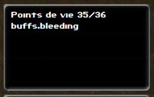
10.2 Adding and removing buffs
Adding a buff on a character is fairly easy. The name of a buff is defined by the name of it scripts. To add the buff defined in scripts/buffs/bleeding.mjs, we would do the following:
characters.addBuff("bleeding");The bleeding buff is a tick-based buff, meaning that once it runs off of ticks, the buff will remove itself. But what if we wanted to remove it, for another reason ? We will first need to fetch the buff game object, before removing it:
const buff = characters.getBuff("bleeding");
if (buff)
buff.remove();10.3 Creating a buff
Now that we know how to apply or remove buffs from a character, let's see how to create our own custom buffs. Let's make a blinded buff, reducing the character's perception:
class Blinded {
constructor(model) {
this.model = model;
}
initialize() {
this.model.target.statistics.perception -= 5;
}
finalize() {
this.model.target.statistics.perception += 5;
}
}
export function create(model) {
return new Blinded(model);
}As you can see, like other game objects, buffs have an initialize method, whcih gets executed when the buff is applied on the player. But buffs also have a finalize method, which gets called as the buff gets removed from the character.
Currently, our buff will remain on the character indefinitely, until another script manually removes it. If we want our buff to expire, we can leverage the TaskManager:
class Blinded {
constructor(model) {
this.model = model;
}
initialize() {
this.model.target.statistics.perception -= 5;
this.tasks.addTask("expire", 86400000, 1);
}
finalize() {
this.model.target.statistics.perception += 5;
}
expire() {
this.model.remove();
}
}
export function create(model) {
return new Blinded(model);
}We now schedule a call to our expire method, one day after the buff gets applied. Then, in the expire method, we call our game object's remove method, which will in turn call the finalize method and remove the buff from the character.
10.4 Cumulating buffs
There is one important fact to know about buffs: there cannot be several instance of a same buff on the same player at a given time. However, it is possible to cumulate buffs using a single buff game object. We will now see what happens when you add a buff to a character, when an instance of the same buff is already being applied on a character.
If you were to call character.addBuff("blinded") twice, it's initialize method will only be called once. However, if you provide a repeat method, it will get called instead. Let's see how this might be implemented:
repeat() {
this.tasks.removeTask("expire");
this.tasks.addTask("expire", 86400000, 1);
}In our repeat method, we first unschedule the call to our expire method, and re-schedule it to one day in the future. This means applying the buff two times on a character doesn't change anything, but ensure that the buff won't expire until one day after the last addition, rather than one day after the first addition.